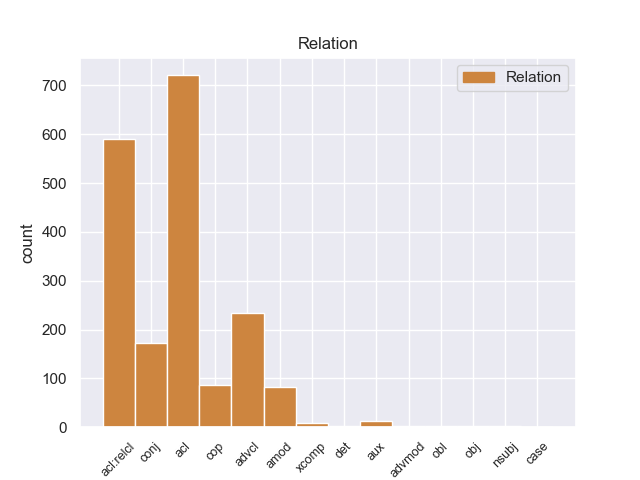
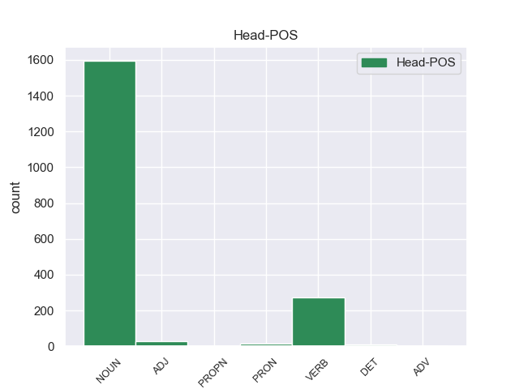
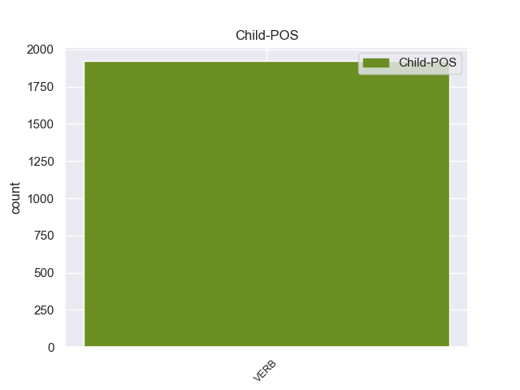

Distribution of features within this leaf



Agreement Rules sorted by frequency.
- When the dependent token is the adjectival clause(acl) of the head token, and the dependent token is VERB.
1 En _ _ _ _ 0 _ _ _
2 1991 _ _ _ _ 0 _ _ _
3 , _ _ _ _ 0 _ _ _
4 como _ _ _ _ 0 _ _ _
5 ya _ _ _ _ 0 _ _ _
6 está _ _ _ _ 0 _ _ _
7 indicado _ _ _ _ 0 _ _ _
8 en _ _ _ _ 0 _ _ _
9 el _ _ _ _ 0 _ _ _
10 párrafo _ _ _ _ 0 _ _ _
11 anterior _ _ _ _ 0 _ _ _
12 , _ _ _ _ 0 _ _ _
13 se _ _ _ _ 0 _ _ _
14 creó _ _ _ _ 0 _ _ _
15 un _ _ _ _ 0 _ _ _
16 equipo _ _ _ _ 0 _ _ _
17 ad _ _ _ _ 0 _ _ _
18 hoc _ _ _ _ 0 _ _ _
19 para _ _ _ _ 0 _ _ _
20 averiguar _ _ _ _ 0 _ _ _
21 como _ _ _ _ 0 _ _ _
22 se _ _ _ _ 0 _ _ _
23 podía _ _ _ _ 0 _ _ _
24 desarrollar _ _ _ _ 0 _ _ _
25 el _ _ _ _ 0 _ _ _
26 Dialogo _ _ _ _ 0 _ _ _
27 Social _ _ _ _ 0 _ _ _
28 , _ _ _ _ 0 _ _ _
29 este _ _ _ _ 0 _ _ _
30 equipo _ _ _ _ 0 _ _ _
31 estaba _ _ _ _ 0 _ _ _
32 formado formado VERB _ Gender=Masc|Number=Sing|VerbForm=Part 34 acl _ _
33 por _ _ _ _ 0 _ _ _
34 representantes representante NOUN _ Gender=Masc|Number=Plur 0 _ _ _
35 de _ _ _ _ 0 _ _ _
36 todas _ _ _ _ 0 _ _ _
37 las _ _ _ _ 0 _ _ _
38 organizaciones _ _ _ _ 0 _ _ _
39 relacionadas _ _ _ _ 0 _ _ _
40 con _ _ _ _ 0 _ _ _
41 CES _ _ _ _ 0 _ _ _
42 , _ _ _ _ 0 _ _ _
43 UNICE _ _ _ _ 0 _ _ _
44 y _ _ _ _ 0 _ _ _
45 CEEP _ _ _ _ 0 _ _ _
46 ; _ _ _ _ 0 _ _ _
1 En _ _ _ _ 0 _ _ _
2 1991 _ _ _ _ 0 _ _ _
3 , _ _ _ _ 0 _ _ _
4 como _ _ _ _ 0 _ _ _
5 ya _ _ _ _ 0 _ _ _
6 está _ _ _ _ 0 _ _ _
7 indicado indicado VERB _ Gender=Masc|Number=Sing|VerbForm=Part 16 acl:relcl _ _
8 en _ _ _ _ 0 _ _ _
9 el _ _ _ _ 0 _ _ _
10 párrafo _ _ _ _ 0 _ _ _
11 anterior _ _ _ _ 0 _ _ _
12 , _ _ _ _ 0 _ _ _
13 se _ _ _ _ 0 _ _ _
14 creó _ _ _ _ 0 _ _ _
15 un _ _ _ _ 0 _ _ _
16 equipo equipo NOUN _ Gender=Masc|Number=Sing 0 _ _ _
17 ad _ _ _ _ 0 _ _ _
18 hoc _ _ _ _ 0 _ _ _
19 para _ _ _ _ 0 _ _ _
20 averiguar _ _ _ _ 0 _ _ _
21 como _ _ _ _ 0 _ _ _
22 se _ _ _ _ 0 _ _ _
23 podía _ _ _ _ 0 _ _ _
24 desarrollar _ _ _ _ 0 _ _ _
25 el _ _ _ _ 0 _ _ _
26 Dialogo _ _ _ _ 0 _ _ _
27 Social _ _ _ _ 0 _ _ _
28 , _ _ _ _ 0 _ _ _
29 este _ _ _ _ 0 _ _ _
30 equipo _ _ _ _ 0 _ _ _
31 estaba _ _ _ _ 0 _ _ _
32 formado _ _ _ _ 0 _ _ _
33 por _ _ _ _ 0 _ _ _
34 representantes _ _ _ _ 0 _ _ _
35 de _ _ _ _ 0 _ _ _
36 todas _ _ _ _ 0 _ _ _
37 las _ _ _ _ 0 _ _ _
38 organizaciones _ _ _ _ 0 _ _ _
39 relacionadas _ _ _ _ 0 _ _ _
40 con _ _ _ _ 0 _ _ _
41 CES _ _ _ _ 0 _ _ _
42 , _ _ _ _ 0 _ _ _
43 UNICE _ _ _ _ 0 _ _ _
44 y _ _ _ _ 0 _ _ _
45 CEEP _ _ _ _ 0 _ _ _
46 ; _ _ _ _ 0 _ _ _
1 Fue _ _ _ _ 0 _ _ _
2 escrita escrita VERB _ Gender=Fem|Number=Sing|VerbForm=Part 0 _ _ _
3 y _ _ _ _ 0 _ _ _
4 dirigida dirigida VERB _ Gender=Fem|Number=Sing|VerbForm=Part 2 advcl _ _
5 por _ _ _ _ 0 _ _ _
6 Hugo _ _ _ _ 0 _ _ _
7 Moser _ _ _ _ 0 _ _ _
8 , _ _ _ _ 0 _ _ _
9 para _ _ _ _ 0 _ _ _
10 quien _ _ _ _ 0 _ _ _
11 fue _ _ _ _ 0 _ _ _
12 su _ _ _ _ 0 _ _ _
13 primer _ _ _ _ 0 _ _ _
14 gran _ _ _ _ 0 _ _ _
15 éxito _ _ _ _ 0 _ _ _
16 . _ _ _ _ 0 _ _ _
1 Tahai _ _ _ _ 0 _ _ _
2 es _ _ _ _ 0 _ _ _
3 uno uno PRON _ Definite=Ind|Gender=Masc|Number=Sing|PronType=Art 0 _ _ _
4 de _ _ _ _ 0 _ _ _
5 los _ _ _ _ 0 _ _ _
6 lugares _ _ _ _ 0 _ _ _
7 más _ _ _ _ 0 _ _ _
8 lindos _ _ _ _ 0 _ _ _
9 de _ _ _ _ 0 _ _ _
10 la _ _ _ _ 0 _ _ _
11 isla _ _ _ _ 0 _ _ _
12 , _ _ _ _ 0 _ _ _
13 y _ _ _ _ 0 _ _ _
14 estar _ _ _ _ 0 _ _ _
15 hospedado hospedado VERB _ Gender=Masc|Number=Sing|VerbForm=Part 3 conj _ _
16 en _ _ _ _ 0 _ _ _
17 pleno _ _ _ _ 0 _ _ _
18 mirador _ _ _ _ 0 _ _ _
19 es _ _ _ _ 0 _ _ _
20 increíble _ _ _ _ 0 _ _ _
21 . _ _ _ _ 0 _ _ _
1 Está _ _ _ _ 0 _ _ _
2 considerado considerado VERB _ Gender=Masc|Number=Sing|VerbForm=Part 3 cop _ _
3 uno uno PRON _ Gender=Masc|Number=Sing|VerbForm=Part 0 _ _ _
4 de _ _ _ _ 0 _ _ _
5 los _ _ _ _ 0 _ _ _
6 mejores _ _ _ _ 0 _ _ _
7 jugadores _ _ _ _ 0 _ _ _
8 de _ _ _ _ 0 _ _ _
9 la _ _ _ _ 0 _ _ _
10 historia _ _ _ _ 0 _ _ _
11 de _ _ _ _ 0 _ _ _
12 Dinamarca _ _ _ _ 0 _ _ _
13 , _ _ _ _ 0 _ _ _
14 junto _ _ _ _ 0 _ _ _
15 a _ _ _ _ 0 _ _ _
16 otras _ _ _ _ 0 _ _ _
17 grandes _ _ _ _ 0 _ _ _
18 estrellas _ _ _ _ 0 _ _ _
19 como _ _ _ _ 0 _ _ _
20 Michael _ _ _ _ 0 _ _ _
21 Laudrup _ _ _ _ 0 _ _ _
22 , _ _ _ _ 0 _ _ _
23 Peter _ _ _ _ 0 _ _ _
24 Schmeichel _ _ _ _ 0 _ _ _
25 o _ _ _ _ 0 _ _ _
26 Allan _ _ _ _ 0 _ _ _
27 Simonsen _ _ _ _ 0 _ _ _
28 . _ _ _ _ 0 _ _ _
1 Uno _ _ _ _ 0 _ _ _
2 de _ _ _ _ 0 _ _ _
3 los _ _ _ _ 0 _ _ _
4 casos _ _ _ _ 0 _ _ _
5 más _ _ _ _ 0 _ _ _
6 extraños _ _ _ _ 0 _ _ _
7 y _ _ _ _ 0 _ _ _
8 más _ _ _ _ 0 _ _ _
9 enquistado _ _ _ _ 0 _ _ _
10 es _ _ _ _ 0 _ _ _
11 el _ _ _ _ 0 _ _ _
12 caso _ _ _ _ 0 _ _ _
13 de _ _ _ _ 0 _ _ _
14 el _ _ _ _ 0 _ _ _
15 bielorruso _ _ _ _ 0 _ _ _
16 Hleb _ _ _ _ 0 _ _ _
17 que _ _ _ _ 0 _ _ _
18 desde _ _ _ _ 0 _ _ _
19 que _ _ _ _ 0 _ _ _
20 fichó _ _ _ _ 0 _ _ _
21 por _ _ _ _ 0 _ _ _
22 el _ _ _ _ 0 _ _ _
23 club _ _ _ _ 0 _ _ _
24 no _ _ _ _ 0 _ _ _
25 ha _ _ _ _ 0 _ _ _
26 llegado _ _ _ _ 0 _ _ _
27 a _ _ _ _ 0 _ _ _
28 jugar _ _ _ _ 0 _ _ _
29 dos _ _ _ _ 0 _ _ _
30 partidos _ _ _ _ 0 _ _ _
31 seguidos _ _ _ _ 0 _ _ _
32 y _ _ _ _ 0 _ _ _
33 que _ _ _ _ 0 _ _ _
34 esta _ _ _ _ 0 _ _ _
35 es _ _ _ _ 0 _ _ _
36 la _ _ _ _ 0 _ _ _
37 ultima _ _ _ _ 0 _ _ _
38 temporada _ _ _ _ 0 _ _ _
39 con _ _ _ _ 0 _ _ _
40 contrato _ _ _ _ 0 _ _ _
41 en _ _ _ _ 0 _ _ _
42 el _ _ _ _ 0 _ _ _
43 club club NOUN _ Gender=Masc|Number=Sing 0 _ _ _
44 culé _ _ _ _ 0 _ _ _
45 , _ _ _ _ 0 _ _ _
46 y _ _ _ _ 0 _ _ _
47 que _ _ _ _ 0 _ _ _
48 finalizará _ _ _ _ 0 _ _ _
49 su _ _ _ _ 0 _ _ _
50 vinculación _ _ _ _ 0 _ _ _
51 como _ _ _ _ 0 _ _ _
52 cedido cedido VERB _ Gender=Masc|Number=Sing|VerbForm=Part 43 amod _ _
53 en _ _ _ _ 0 _ _ _
54 el _ _ _ _ 0 _ _ _
55 Wolfburgo _ _ _ _ 0 _ _ _
56 alemán _ _ _ _ 0 _ _ _
57 . _ _ _ _ 0 _ _ _
1 En _ _ _ _ 0 _ _ _
2 concreto _ _ _ _ 0 _ _ _
3 , _ _ _ _ 0 _ _ _
4 Marlaska _ _ _ _ 0 _ _ _
5 les _ _ _ _ 0 _ _ _
6 solicita _ _ _ _ 0 _ _ _
7 que _ _ _ _ 0 _ _ _
8 remitan _ _ _ _ 0 _ _ _
9 toda _ _ _ _ 0 _ _ _
10 la _ _ _ _ 0 _ _ _
11 información _ _ _ _ 0 _ _ _
12 sobre _ _ _ _ 0 _ _ _
13 " _ _ _ _ 0 _ _ _
14 cuantas _ _ _ _ 0 _ _ _
15 irregularidades _ _ _ _ 0 _ _ _
16 e _ _ _ _ 0 _ _ _
17 incumplimientos _ _ _ _ 0 _ _ _
18 de _ _ _ _ 0 _ _ _
19 la _ _ _ _ 0 _ _ _
20 normativa _ _ _ _ 0 _ _ _
21 bancaria _ _ _ _ 0 _ _ _
22 se _ _ _ _ 0 _ _ _
23 pudieran _ _ _ _ 0 _ _ _
24 haber haer VERB _ Gender=Masc|Number=Sing|Tense=Past|VerbForm=Part 25 aux _ _
25 cometido cometido VERB _ Gender=Masc|Number=Sing|Tense=Past|VerbForm=Part 0 _ _ _
26 por _ _ _ _ 0 _ _ _
27 los _ _ _ _ 0 _ _ _
28 anteriores _ _ _ _ 0 _ _ _
29 responsables _ _ _ _ 0 _ _ _
30 de _ _ _ _ 0 _ _ _
31 la _ _ _ _ 0 _ _ _
32 entidad _ _ _ _ 0 _ _ _
33 " _ _ _ _ 0 _ _ _
34 contra _ _ _ _ 0 _ _ _
35 la _ _ _ _ 0 _ _ _
36 normativa _ _ _ _ 0 _ _ _
37 de _ _ _ _ 0 _ _ _
38 Disciplina _ _ _ _ 0 _ _ _
39 e _ _ _ _ 0 _ _ _
40 Intervención _ _ _ _ 0 _ _ _
41 de _ _ _ _ 0 _ _ _
42 las _ _ _ _ 0 _ _ _
43 Entidades _ _ _ _ 0 _ _ _
44 de _ _ _ _ 0 _ _ _
45 Crédito _ _ _ _ 0 _ _ _
46 . _ _ _ _ 0 _ _ _
1 Pero _ _ _ _ 0 _ _ _
2 los _ _ _ _ 0 _ _ _
3 virreyes _ _ _ _ 0 _ _ _
4 de _ _ _ _ 0 _ _ _
5 Cataluña _ _ _ _ 0 _ _ _
6 se _ _ _ _ 0 _ _ _
7 mostraron mostraer VERB _ Gender=Masc|Number=Sing|Tense=Past|VerbForm=Part 0 _ _ _
8 recelosos recelosos VERB _ Gender=Masc|Number=Sing|VerbForm=Part 7 xcomp _ _
9 frente _ _ _ _ 0 _ _ _
10 a _ _ _ _ 0 _ _ _
11 este _ _ _ _ 0 _ _ _
12 modelo _ _ _ _ 0 _ _ _
13 de _ _ _ _ 0 _ _ _
14 autodefensa _ _ _ _ 0 _ _ _
15 e _ _ _ _ 0 _ _ _
16 impidieron _ _ _ _ 0 _ _ _
17 a _ _ _ _ 0 _ _ _
18 menudo _ _ _ _ 0 _ _ _
19 su _ _ _ _ 0 _ _ _
20 convocatoria _ _ _ _ 0 _ _ _
21 , _ _ _ _ 0 _ _ _
22 lo _ _ _ _ 0 _ _ _
23 que _ _ _ _ 0 _ _ _
24 llevó _ _ _ _ 0 _ _ _
25 a _ _ _ _ 0 _ _ _
26 las _ _ _ _ 0 _ _ _
27 villas _ _ _ _ 0 _ _ _
28 a _ _ _ _ 0 _ _ _
29 la _ _ _ _ 0 _ _ _
30 formación _ _ _ _ 0 _ _ _
31 de _ _ _ _ 0 _ _ _
32 milicias _ _ _ _ 0 _ _ _
33 , _ _ _ _ 0 _ _ _
34 las _ _ _ _ 0 _ _ _
35 « _ _ _ _ 0 _ _ _
36 desenes _ _ _ _ 0 _ _ _
37 » _ _ _ _ 0 _ _ _
38 ( _ _ _ _ 0 _ _ _
39 decenas _ _ _ _ 0 _ _ _
40 ) _ _ _ _ 0 _ _ _
41 y _ _ _ _ 0 _ _ _
42 otro _ _ _ _ 0 _ _ _
43 tipo _ _ _ _ 0 _ _ _
44 de _ _ _ _ 0 _ _ _
45 hermandades _ _ _ _ 0 _ _ _
46 de _ _ _ _ 0 _ _ _
47 armas _ _ _ _ 0 _ _ _
48 de _ _ _ _ 0 _ _ _
49 carácter _ _ _ _ 0 _ _ _
50 parapolicial _ _ _ _ 0 _ _ _
51 y _ _ _ _ 0 _ _ _
52 paramilitar _ _ _ _ 0 _ _ _
53 , _ _ _ _ 0 _ _ _
54 que _ _ _ _ 0 _ _ _
55 a _ _ _ _ 0 _ _ _
56 el _ _ _ _ 0 _ _ _
57 no _ _ _ _ 0 _ _ _
58 estar _ _ _ _ 0 _ _ _
59 tipificadas _ _ _ _ 0 _ _ _
60 legalmente _ _ _ _ 0 _ _ _
61 en _ _ _ _ 0 _ _ _
62 las _ _ _ _ 0 _ _ _
63 constituciones _ _ _ _ 0 _ _ _
64 catalanas _ _ _ _ 0 _ _ _
65 no _ _ _ _ 0 _ _ _
66 requerían _ _ _ _ 0 _ _ _
67 de _ _ _ _ 0 _ _ _
68 la _ _ _ _ 0 _ _ _
69 autorización _ _ _ _ 0 _ _ _
70 previa _ _ _ _ 0 _ _ _
71 de _ _ _ _ 0 _ _ _
72 el _ _ _ _ 0 _ _ _
73 rey _ _ _ _ 0 _ _ _
74 , _ _ _ _ 0 _ _ _
75 o _ _ _ _ 0 _ _ _
76 en _ _ _ _ 0 _ _ _
77 su _ _ _ _ 0 _ _ _
78 defecto _ _ _ _ 0 _ _ _
79 de _ _ _ _ 0 _ _ _
80 el _ _ _ _ 0 _ _ _
81 virrey _ _ _ _ 0 _ _ _
82 , _ _ _ _ 0 _ _ _
83 para _ _ _ _ 0 _ _ _
84 ser _ _ _ _ 0 _ _ _
85 movilizadas _ _ _ _ 0 _ _ _
86 . _ _ _ _ 0 _ _ _
1 La _ _ _ _ 0 _ _ _
2 captura _ _ _ _ 0 _ _ _
3 y _ _ _ _ 0 _ _ _
4 destrucción _ _ _ _ 0 _ _ _
5 de _ _ _ _ 0 _ _ _
6 Portobelo _ _ _ _ 0 _ _ _
7 , _ _ _ _ 0 _ _ _
8 llevada llevada VERB _ Gender=Masc|Number=Sing|Tense=Past|VerbForm=Part 0 _ _ _
9 a _ _ _ _ 0 _ _ _
10 cabo cabo VERB _ Gender=Masc|Number=Sing 8 obl _ _
11 el _ _ _ _ 0 _ _ _
12 21 _ _ _ _ 0 _ _ _
13 de _ _ _ _ 0 _ _ _
14 noviembre _ _ _ _ 0 _ _ _
15 de _ _ _ _ 0 _ _ _
16 1739 _ _ _ _ 0 _ _ _
17 , _ _ _ _ 0 _ _ _
18 fue _ _ _ _ 0 _ _ _
19 la _ _ _ _ 0 _ _ _
20 primera _ _ _ _ 0 _ _ _
21 acción _ _ _ _ 0 _ _ _
22 de _ _ _ _ 0 _ _ _
23 importancia _ _ _ _ 0 _ _ _
24 de _ _ _ _ 0 _ _ _
25 la _ _ _ _ 0 _ _ _
26 guerra _ _ _ _ 0 _ _ _
27 de _ _ _ _ 0 _ _ _
28 el _ _ _ _ 0 _ _ _
29 Asiento _ _ _ _ 0 _ _ _
30 . _ _ _ _ 0 _ _ _
1 El _ _ _ _ 0 _ _ _
2 29 _ _ _ _ 0 _ _ _
3 de _ _ _ _ 0 _ _ _
4 septiembre _ _ _ _ 0 _ _ _
5 de _ _ _ _ 0 _ _ _
6 1364 _ _ _ _ 0 _ _ _
7 Bertrand _ _ _ _ 0 _ _ _
8 Du _ _ _ _ 0 _ _ _
9 Guesclin _ _ _ _ 0 _ _ _
10 y _ _ _ _ 0 _ _ _
11 Carlos _ _ _ _ 0 _ _ _
12 de _ _ _ _ 0 _ _ _
13 Blois _ _ _ _ 0 _ _ _
14 fueron _ _ _ _ 0 _ _ _
15 gravemente gravemente VERB _ Gender=Masc|Number=Sing|Tense=Past|VerbForm=Part 16 advmod _ _
16 derrotados derrotado VERB _ Gender=Masc|Number=Sing|VerbForm=Part 0 _ _ _
17 en _ _ _ _ 0 _ _ _
18 la _ _ _ _ 0 _ _ _
19 Batalla _ _ _ _ 0 _ _ _
20 de _ _ _ _ 0 _ _ _
21 Auray _ _ _ _ 0 _ _ _
22 por _ _ _ _ 0 _ _ _
23 Juan _ _ _ _ 0 _ _ _
24 V _ _ _ _ 0 _ _ _
25 de _ _ _ _ 0 _ _ _
26 Bretaña _ _ _ _ 0 _ _ _
27 ( _ _ _ _ 0 _ _ _
28 hijo _ _ _ _ 0 _ _ _
29 de _ _ _ _ 0 _ _ _
30 Juan _ _ _ _ 0 _ _ _
31 de _ _ _ _ 0 _ _ _
32 Monfort _ _ _ _ 0 _ _ _
33 , _ _ _ _ 0 _ _ _
34 que _ _ _ _ 0 _ _ _
35 lo _ _ _ _ 0 _ _ _
36 había _ _ _ _ 0 _ _ _
37 heredado _ _ _ _ 0 _ _ _
38 ) _ _ _ _ 0 _ _ _
39 y _ _ _ _ 0 _ _ _
40 sir _ _ _ _ 0 _ _ _
41 John _ _ _ _ 0 _ _ _
42 Chandos _ _ _ _ 0 _ _ _
43 , _ _ _ _ 0 _ _ _
44 quienes _ _ _ _ 0 _ _ _
45 lucharon _ _ _ _ 0 _ _ _
46 bajo _ _ _ _ 0 _ _ _
47 el _ _ _ _ 0 _ _ _
48 comando _ _ _ _ 0 _ _ _
49 político _ _ _ _ 0 _ _ _
50 y _ _ _ _ 0 _ _ _
51 militar _ _ _ _ 0 _ _ _
52 de _ _ _ _ 0 _ _ _
53 la _ _ _ _ 0 _ _ _
54 madre _ _ _ _ 0 _ _ _
55 de _ _ _ _ 0 _ _ _
56 el _ _ _ _ 0 _ _ _
57 primero _ _ _ _ 0 _ _ _
58 , _ _ _ _ 0 _ _ _
59 Juana _ _ _ _ 0 _ _ _
60 de _ _ _ _ 0 _ _ _
61 Dreux _ _ _ _ 0 _ _ _
62 . _ _ _ _ 0 _ _ _
1 En _ _ _ _ 0 _ _ _
2 esta _ _ _ _ 0 _ _ _
3 dorsal _ _ _ _ 0 _ _ _
4 concurren _ _ _ _ 0 _ _ _
5 dos _ _ _ _ 0 _ _ _
6 de _ _ _ _ 0 _ _ _
7 los _ _ _ _ 0 _ _ _
8 episodios _ _ _ _ 0 _ _ _
9 eruptivos _ _ _ _ 0 _ _ _
10 históricos _ _ _ _ 0 _ _ _
11 que _ _ _ _ 0 _ _ _
12 han _ _ _ _ 0 _ _ _
13 sucedido _ _ _ _ 0 _ _ _
14 en _ _ _ _ 0 _ _ _
15 Tenerife _ _ _ _ 0 _ _ _
16 : _ _ _ _ 0 _ _ _
17 la _ _ _ _ 0 _ _ _
18 erupción _ _ _ _ 0 _ _ _
19 de _ _ _ _ 0 _ _ _
20 Arenas _ _ _ _ 0 _ _ _
21 Negras _ _ _ _ 0 _ _ _
22 en _ _ _ _ 0 _ _ _
23 1706 _ _ _ _ 0 _ _ _
24 , _ _ _ _ 0 _ _ _
25 que _ _ _ _ 0 _ _ _
26 destruyó _ _ _ _ 0 _ _ _
27 parte _ _ _ _ 0 _ _ _
28 de _ _ _ _ 0 _ _ _
29 el _ _ _ _ 0 _ _ _
30 pueblo _ _ _ _ 0 _ _ _
31 y _ _ _ _ 0 _ _ _
32 el _ _ _ _ 0 _ _ _
33 puerto _ _ _ _ 0 _ _ _
34 de _ _ _ _ 0 _ _ _
35 Garachico _ _ _ _ 0 _ _ _
36 , _ _ _ _ 0 _ _ _
37 y _ _ _ _ 0 _ _ _
38 la _ _ _ _ 0 _ _ _
39 de _ _ _ _ 0 _ _ _
40 el _ _ _ _ 0 _ _ _
41 Chinyero _ _ _ _ 0 _ _ _
42 en _ _ _ _ 0 _ _ _
43 1909 _ _ _ _ 0 _ _ _
44 , _ _ _ _ 0 _ _ _
45 que _ _ _ _ 0 _ _ _
46 , _ _ _ _ 0 _ _ _
47 como _ _ _ _ 0 _ _ _
48 ya _ _ _ _ 0 _ _ _
49 se _ _ _ _ 0 _ _ _
50 ha _ _ _ _ 0 _ _ _
51 indicado _ _ _ _ 0 _ _ _
52 , _ _ _ _ 0 _ _ _
53 fue _ _ _ _ 0 _ _ _
54 la _ _ _ _ 0 _ _ _
55 última _ _ _ _ 0 _ _ _
56 erupción _ _ _ _ 0 _ _ _
57 que _ _ _ _ 0 _ _ _
58 ha _ _ _ _ 0 _ _ _
59 tenido tener VERB _ Gender=Masc|Number=Sing|Tense=Past|VerbForm=Part 0 _ _ _
60 lugar lugar VERB _ Gender=Masc|Number=Sing 59 obj _ _
61 en _ _ _ _ 0 _ _ _
62 la _ _ _ _ 0 _ _ _
63 isla _ _ _ _ 0 _ _ _
64 . _ _ _ _ 0 _ _ _
1 ¿ _ _ _ _ 0 _ _ _
2 Que _ _ _ _ 0 _ _ _
3 excusa _ _ _ _ 0 _ _ _
4 tiene _ _ _ _ 0 _ _ _
5 el _ _ _ _ 0 _ _ _
6 kirchnerismo _ _ _ _ 0 _ _ _
7 para _ _ _ _ 0 _ _ _
8 lamer lamer VERB _ Definite=Def|Gender=Fem|Number=Sing|PronType=Art 10 det _ _
9 las _ _ _ _ 0 _ _ _
10 botas bota NOUN _ Gender=Fem|Number=Plur 0 _ _ _
11 de _ _ _ _ 0 _ _ _
12 Timerman _ _ _ _ 0 _ _ _
13 ? _ _ _ _ 0 _ _ _
1 Nacido nacido VERB _ Gender=Masc|Number=Sing|VerbForm=Part 8 nsubj _ _
2 en _ _ _ _ 0 _ _ _
3 Sicilia _ _ _ _ 0 _ _ _
4 , _ _ _ _ 0 _ _ _
5 está _ _ _ _ 0 _ _ _
6 considerado _ _ _ _ 0 _ _ _
7 como _ _ _ _ 0 _ _ _
8 uno uno NOUN _ Gender=Masc|Number=Sing|PronType=Ind 0 _ _ _
9 de _ _ _ _ 0 _ _ _
10 los _ _ _ _ 0 _ _ _
11 introductores _ _ _ _ 0 _ _ _
12 de _ _ _ _ 0 _ _ _
13 las _ _ _ _ 0 _ _ _
14 técnicas _ _ _ _ 0 _ _ _
15 pictóricas _ _ _ _ 0 _ _ _
16 con _ _ _ _ 0 _ _ _
17 óleo _ _ _ _ 0 _ _ _
18 en _ _ _ _ 0 _ _ _
19 Italia _ _ _ _ 0 _ _ _
20 . _ _ _ _ 0 _ _ _
Disagree Examples:
1 Entre _ _ _ _ 0 _ _ _
2 ellas _ _ _ _ 0 _ _ _
3 nombró _ _ _ _ 0 _ _ _
4 las _ _ _ _ 0 _ _ _
5 relaciones _ _ _ _ 0 _ _ _
6 con _ _ _ _ 0 _ _ _
7 terceros _ _ _ _ 0 _ _ _
8 países _ _ _ _ 0 _ _ _
9 , _ _ _ _ 0 _ _ _
10 la _ _ _ _ 0 _ _ _
11 moneda _ _ _ _ 0 _ _ _
12 , _ _ _ _ 0 _ _ _
13 el _ _ _ _ 0 _ _ _
14 agua _ _ _ _ 0 _ _ _
15 , _ _ _ _ 0 _ _ _
16 el _ _ _ _ 0 _ _ _
17 petróleo _ _ _ _ 0 _ _ _
18 , _ _ _ _ 0 _ _ _
19 las _ _ _ _ 0 _ _ _
20 fronteras _ _ _ _ 0 _ _ _
21 y _ _ _ _ 0 _ _ _
22 la _ _ _ _ 0 _ _ _
23 región _ _ _ _ 0 _ _ _
24 petrolera _ _ _ _ 0 _ _ _
25 de _ _ _ _ 0 _ _ _
26 Abyei _ _ _ _ 0 _ _ _
27 , _ _ _ _ 0 _ _ _
28 fronteriza fronterizo ADJ _ Gender=Fem|Number=Sing 0 _ _ _
29 entre _ _ _ _ 0 _ _ _
30 ambas _ _ _ _ 0 _ _ _
31 regiones _ _ _ _ 0 _ _ _
32 y _ _ _ _ 0 _ _ _
33 que _ _ _ _ 0 _ _ _
34 debía _ _ _ _ 0 _ _ _
35 haber _ _ _ _ 0 _ _ _
36 celebrado celebrar VERB _ Gender=Masc|Number=Sing|Tense=Past|VerbForm=Part 28 conj _ _
37 otro _ _ _ _ 0 _ _ _
38 referéndum _ _ _ _ 0 _ _ _
39 para _ _ _ _ 0 _ _ _
40 elegir _ _ _ _ 0 _ _ _
41 incorporar _ _ _ _ 0 _ _ _
42 se _ _ _ _ 0 _ _ _
43 a _ _ _ _ 0 _ _ _
44 el _ _ _ _ 0 _ _ _
45 sur _ _ _ _ 0 _ _ _
46 o _ _ _ _ 0 _ _ _
47 seguir _ _ _ _ 0 _ _ _
48 unida _ _ _ _ 0 _ _ _
49 a _ _ _ _ 0 _ _ _
50 el _ _ _ _ 0 _ _ _
51 norte _ _ _ _ 0 _ _ _
52 . _ _ _ _ 0 _ _ _
1 Finalmente _ _ _ _ 0 _ _ _
2 , _ _ _ _ 0 _ _ _
3 la _ _ _ _ 0 _ _ _
4 duna _ _ _ _ 0 _ _ _
5 trasera _ _ _ _ 0 _ _ _
6 adquiere _ _ _ _ 0 _ _ _
7 dimensiones _ _ _ _ 0 _ _ _
8 similares _ _ _ _ 0 _ _ _
9 a _ _ _ _ 0 _ _ _
10 la _ _ _ _ 0 _ _ _
11 primitiva _ _ _ _ 0 _ _ _
12 duna duno NOUN _ Gender=Fem|Number=Sing 0 _ _ _
13 frontal _ _ _ _ 0 _ _ _
14 , _ _ _ _ 0 _ _ _
15 que _ _ _ _ 0 _ _ _
16 se _ _ _ _ 0 _ _ _
17 ha _ _ _ _ 0 _ _ _
18 convertido convertir VERB _ Gender=Masc|Number=Sing|Tense=Past|VerbForm=Part 12 acl:relcl _ _
19 en _ _ _ _ 0 _ _ _
20 una _ _ _ _ 0 _ _ _
21 más _ _ _ _ 0 _ _ _
22 pequeña _ _ _ _ 0 _ _ _
23 , _ _ _ _ 0 _ _ _
24 que _ _ _ _ 0 _ _ _
25 se _ _ _ _ 0 _ _ _
26 mueve _ _ _ _ 0 _ _ _
27 más _ _ _ _ 0 _ _ _
28 rápido _ _ _ _ 0 _ _ _
29 y _ _ _ _ 0 _ _ _
30 se _ _ _ _ 0 _ _ _
31 aleja _ _ _ _ 0 _ _ _
32 con _ _ _ _ 0 _ _ _
33 el _ _ _ _ 0 _ _ _
34 viento _ _ _ _ 0 _ _ _
35 . _ _ _ _ 0 _ _ _
1 Fue _ _ _ _ 0 _ _ _
2 parte _ _ _ _ 0 _ _ _
3 de _ _ _ _ 0 _ _ _
4 la _ _ _ _ 0 _ _ _
5 escena _ _ _ _ 0 _ _ _
6 musical _ _ _ _ 0 _ _ _
7 post _ _ _ _ 0 _ _ _
8 - _ _ _ _ 0 _ _ _
9 punk _ _ _ _ 0 _ _ _
10 ocurrida _ _ _ _ 0 _ _ _
11 en _ _ _ _ 0 _ _ _
12 Mánchester _ _ _ _ 0 _ _ _
13 a _ _ _ _ 0 _ _ _
14 finales _ _ _ _ 0 _ _ _
15 de _ _ _ _ 0 _ _ _
16 la _ _ _ _ 0 _ _ _
17 década _ _ _ _ 0 _ _ _
18 de _ _ _ _ 0 _ _ _
19 1970 _ _ _ _ 0 _ _ _
20 , _ _ _ _ 0 _ _ _
21 aunque _ _ _ _ 0 _ _ _
22 es _ _ _ _ 0 _ _ _
23 conocida conocido ADJ _ Gender=Fem|Number=Sing|VerbForm=Part 0 _ _ _
24 en _ _ _ _ 0 _ _ _
25 Argentina _ _ _ _ 0 _ _ _
26 por _ _ _ _ 0 _ _ _
27 haber _ _ _ _ 0 _ _ _
28 tenido tener VERB _ Gender=Masc|Number=Sing|Tense=Past|VerbForm=Part 23 advcl _ _
29 como _ _ _ _ 0 _ _ _
30 miembro _ _ _ _ 0 _ _ _
31 y _ _ _ _ 0 _ _ _
32 baterista _ _ _ _ 0 _ _ _
33 a _ _ _ _ 0 _ _ _
34 Stephanie _ _ _ _ 0 _ _ _
35 Nuttal _ _ _ _ 0 _ _ _
36 , _ _ _ _ 0 _ _ _
37 futura _ _ _ _ 0 _ _ _
38 integrante _ _ _ _ 0 _ _ _
39 fundadora _ _ _ _ 0 _ _ _
40 y _ _ _ _ 0 _ _ _
41 también _ _ _ _ 0 _ _ _
42 baterista _ _ _ _ 0 _ _ _
43 de _ _ _ _ 0 _ _ _
44 el _ _ _ _ 0 _ _ _
45 grupo _ _ _ _ 0 _ _ _
46 de _ _ _ _ 0 _ _ _
47 rock _ _ _ _ 0 _ _ _
48 argentino _ _ _ _ 0 _ _ _
49 Sumo _ _ _ _ 0 _ _ _
50 . _ _ _ _ 0 _ _ _
1 Pero _ _ _ _ 0 _ _ _
2 es _ _ _ _ 0 _ _ _
3 muy _ _ _ _ 0 _ _ _
4 importante _ _ _ _ 0 _ _ _
5 que _ _ _ _ 0 _ _ _
6 el _ _ _ _ 0 _ _ _
7 pueblo _ _ _ _ 0 _ _ _
8 recuerde _ _ _ _ 0 _ _ _
9 la _ _ _ _ 0 _ _ _
10 traición traición NOUN _ Gender=Fem|Number=Sing 0 _ _ _
11 de _ _ _ _ 0 _ _ _
12 Mauricio _ _ _ _ 0 _ _ _
13 Macri _ _ _ _ 0 _ _ _
14 quien _ _ _ _ 0 _ _ _
15 hoy _ _ _ _ 0 _ _ _
16 se _ _ _ _ 0 _ _ _
17 oculta oculta VERB _ Gender=Masc|Number=Sing|Tense=Past|VerbForm=Part 10 acl:relcl _ _
18 en _ _ _ _ 0 _ _ _
19 Italia _ _ _ _ 0 _ _ _
20 , _ _ _ _ 0 _ _ _
21 para _ _ _ _ 0 _ _ _
22 evadir _ _ _ _ 0 _ _ _
23 criticas _ _ _ _ 0 _ _ _
24 ante _ _ _ _ 0 _ _ _
25 una _ _ _ _ 0 _ _ _
26 colosal _ _ _ _ 0 _ _ _
27 deslealtad _ _ _ _ 0 _ _ _
28 e _ _ _ _ 0 _ _ _
29 incoherencia _ _ _ _ 0 _ _ _
30 de _ _ _ _ 0 _ _ _
31 su _ _ _ _ 0 _ _ _
32 parte _ _ _ _ 0 _ _ _
33 . _ _ _ _ 0 _ _ _
1 El _ _ _ _ 0 _ _ _
2 níquel _ _ _ _ 0 _ _ _
3 incumple _ _ _ _ 0 _ _ _
4 el _ _ _ _ 0 _ _ _
5 plan _ _ _ _ 0 _ _ _
6 de _ _ _ _ 0 _ _ _
7 producción _ _ _ _ 0 _ _ _
8 y _ _ _ _ 0 _ _ _
9 de _ _ _ _ 0 _ _ _
10 exportaciones _ _ _ _ 0 _ _ _
11 en _ _ _ _ 0 _ _ _
12 6 _ _ _ _ 0 _ _ _
13 mil _ _ _ _ 0 _ _ _
14 700 _ _ _ _ 0 _ _ _
15 toneladas _ _ _ _ 0 _ _ _
16 , _ _ _ _ 0 _ _ _
17 lo _ _ _ _ 0 _ _ _
18 que _ _ _ _ 0 _ _ _
19 significó _ _ _ _ 0 _ _ _
20 dejar _ _ _ _ 0 _ _ _
21 de _ _ _ _ 0 _ _ _
22 ingresar _ _ _ _ 0 _ _ _
23 unos _ _ _ _ 0 _ _ _
24 120 _ _ _ _ 0 _ _ _
25 millones _ _ _ _ 0 _ _ _
26 de _ _ _ _ 0 _ _ _
27 dólares _ _ _ _ 0 _ _ _
28 , _ _ _ _ 0 _ _ _
29 también _ _ _ _ 0 _ _ _
30 en _ _ _ _ 0 _ _ _
31 condiciones _ _ _ _ 0 _ _ _
32 de _ _ _ _ 0 _ _ _
33 una _ _ _ _ 0 _ _ _
34 coyuntura _ _ _ _ 0 _ _ _
35 de _ _ _ _ 0 _ _ _
36 precios precio NOUN _ Gender=Masc|Number=Plur 0 _ _ _
37 más _ _ _ _ 0 _ _ _
38 favorable _ _ _ _ 0 _ _ _
39 que _ _ _ _ 0 _ _ _
40 la _ _ _ _ 0 _ _ _
41 prevista prevista VERB _ Gender=Fem|Number=Sing 36 acl:relcl _ _
42 en _ _ _ _ 0 _ _ _
43 el _ _ _ _ 0 _ _ _
44 Plan _ _ _ _ 0 _ _ _
45 . _ _ _ _ 0 _ _ _